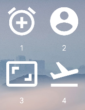
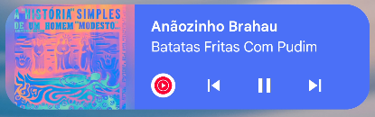
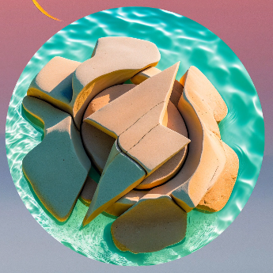
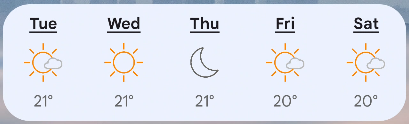
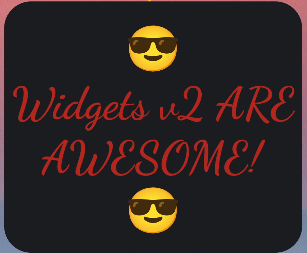

Widget v2
This action allows you to create widgets on your home screen with various layouts, and makes it easy to run your tasks from it.
Examples
- Example Reddit Widget
- Example Remote Device Widget
- Tutorial on how to create a buttons list
- Example Dynamic Media Widget
To use these widgets:
- add a new Widget v2 Tasker widget to your home screen
- configure it on your home screen to give it a name that you can then use reference it in Tasker
- in Tasker, in a task add the Widget v2 action
- in Widget Name use the magnifying glass to select the widget you added to your home screen
- select the Layout you want to use
- configure the fields below to your liking
Widget Layouts
Buttons
One or more icons and labels similar to the home screen app icons you have on your launcher.
Set images for the buttons in the Images input, and set the labels in the Texts input.

Media
A media-player-like widget with a big image on the left, some text at the top and some control buttons at the bottom. You can use this for media but also for any functionality you like.
The first image you set in the Images input will be used for the big image on the left. The rest of the images will be used for the buttons on the bottom.
The Title will be used as the top text while the Texts will be used as bottom texts.

Circular Image
A simple image with a circular cutout.

Table
A list of rows that will be structured like a table.
Each Cell in the table can contain either an image or a text but not both.
To get a table with 2 rows, with 3 images at the top and 3 texts at the bottom you would set:
- Images: image1.png,image2.png,image3.png
- Texts: ,,,text 1, text 2, text 3
Notice how the first 3 texts were left empty to accomodate for the 3 cells in which texts aren't used.

Custom
Any layout you want! 😁 You can infinitely customize the layout exactly to your liking!

More info about the Custom Layout
Action Inputs
Background Colour
The background color of the whole widget.
If you don't specify text color, it'll automatically be chosen to contrast with this.
Texts
Depending on the chosen layout, these texts can appear in different places:
- Buttons: are used as labels for each button
- Media: is used as the subtitle for the widget
Text Styles
Styles for each of the texts above.
If you specify less styles than texts, the last specified style will be used for the remainder of the texts.
A style can be:
- a color in HTML notation or one of the color Material Design tokens (primary, onPrimary, secondary, etc.)
- a number to set the text size in sp
- one of sansserif, serif, monospace, cursive to set the font family
- one of left, right, center, start, end to set text alignment
- italic
- bold
- underline
- linethrough
For example, you could set 2 texts with 2 different styles:
- red, bold text
- green, italic, underlined text
by setting this to #FF0000 bold,#00FF00 italic underline.
Important: Keep in mind that the title also counts as a text, so the first style you provide is assigned to the title.
Images
Depending on the chosen layout, these images can appear in different places:
- Buttons: are used as the main image for each button
- Media: the first image will be used as the main one on the left. The rest are used as buttons below.
Image Tints
If you set this, you'll colorize the images above with a single, solid color.
You can specify an image not to be tinted by leaving the value empty.
If you specify less colors than images, the last specified colour will be used for the remainder of the images.
Image Sizes
The size or sizes you want the images to have in dp.
If you specify less sizes than images, the last specified size will be used for the remainder of the images.
Tasks
Tasks to be ran when you tap on the texts/images above.
Specify one task for each of the text/image, or leave blank to make them not clickable.
Commands
Commands to be ran when you tap on the texts/images above.
Specify one command for each of the text/image, or leave blank to make them not clickable.
These commands will trigger the Command event in Tasker. Check that for more info.
Command Prefix
If set, will prepend prefix=:= to all your commands above (where prefix is the actual prefix you specify here).
Material You Colors
If enabled, will use Material You Colors whenever colors are not set explicitly above, which means, the Widget colors will match your wallpaper.
Number of Columns
The number of columns the widget will have to show your data.
For example, if you specify 10 texts and set Number of Columns to 5, you'll get 2 rows with 5 columns each.